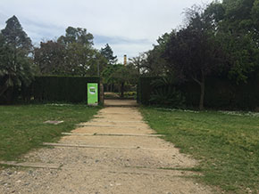

Aire Pur
Jardí d’Aclimatació

El Jardí d’Aclimatació és característic per contendre 230 espècies de plantes diferents, algunes úniques o molt escasses a la ciutat. És considerat un indret de rara bellesa. Va ser creat per Nicolau M.Rubió i Fudurí l’any 1930. Els exemplars estan prou separats entre ells per poder contemplar-los de manera individualitzada.